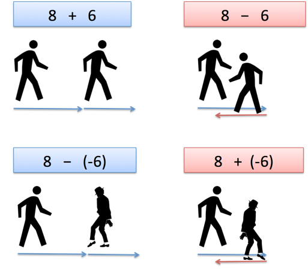

Negative Tall
I matematikk er et negativt tall et reelt tall som er mindre enn null. Negative tall representerer motsetninger. Hvis positiv representerer en bevegelse til høyre, representerer negativ en bevegelse til venstre. Hvis positiv representerer over havnivå, representerer negativ under havnivå. Hvis positiv representerer et innskudd, representerer negativ en tilbaketrekking. De brukes ofte til å representere omfanget av tap eller mangel. En gjeld som skyldes kan betraktes som en negativ ressurs, en reduksjon i noe kvantum kan betraktes som en negativ økning. Hvis en mengde kan ha en av to motsatte sanser, kan man velge å skille mellom disse sansene - kanskje vilkårlig - som positiv og negativ. I den medisinske sammenhengen med å bekjempe en svulst, kunne en utvidelse betraktes som en negativ krymping. Negative tall brukes til å beskrive verdier på en skala som går under null, for eksempel Celsius og Fahrenheit skalaene for temperatur. Lovene for aritmetikk for negative tall sikrer at sunnfornuftens ide om motsatt reflekteres i aritmetikk. For eksempel, - (- 3) = 3 fordi motsatt av motsatt er den opprinnelige verdien.
